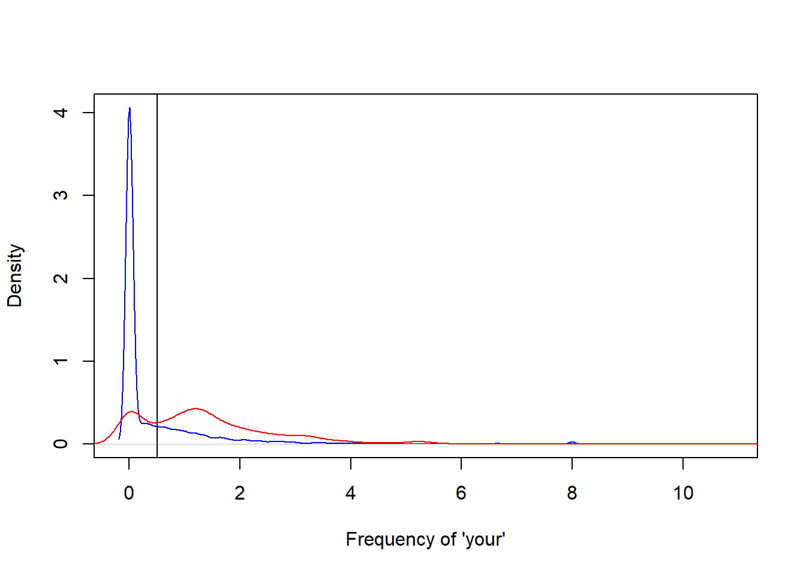
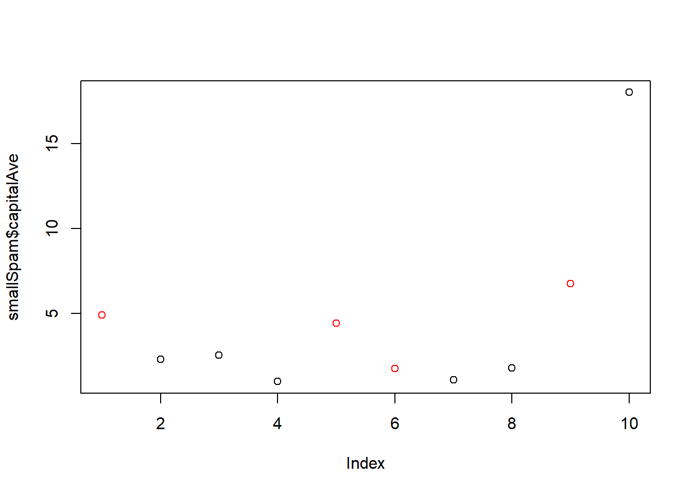

start with a question You need to think about what to predict and what you need to predict with.
collect the input data The collected data should be directly related to your question. More data trumps better methods.
from data, use measure characteristics or build features that might be useful Err on the side of creating more features.
pick an appropriate algorithm It matter less - many models provide similar predictions.
estimate the parameters of the algorithm
use the test set to evaluate your model Several criteria: interpretable (for example, if-then interpretation in decision tree models), simple, accurate, fast and scalable (which can be applied in big data)
SPAM example to illustrate the process
library(kernlab)
data(spam)
#head(spam)
plot(density(spam$your[spam$type=="nonspam"]), col="blue", main="", xlab="Frequency of 'your'")
lines(density(spam$your[spam$type=="spam"]), col="red")
abline(v=0.5, col="black")
prediction<-ifelse(spam$your>0.5, "spam", "nonspam")
table(prediction, spam$type)/length(spam$type)##
## prediction nonspam spam
## nonspam 0.4590306 0.1017170
## spam 0.1469246 0.2923278in sample error: the error rate you get on the same data you used to build predictor, a.k.a. resubstitution error
out of sample error: error rate you get on a new data set, a.k.a. generalization error
out of sample error is what matters; in sample error always is smaller (the reason is veryfitting and you capture the noise rather the the signal)
Example of in and out of sample error rates
library(kernlab); data(spam); set.seed(333)
smallSpam<-spam[sample(dim(spam)[1], size=10),]
spamLabel<-(smallSpam$type=="spam")*1+1
plot(smallSpam$capitalAve, col=spamLabel)
rule1<-function(x){
prediction<-rep(NA, length(x))
prediction[x>2.7]<-"spam"
prediction[x<2.4]<-"nonspam"
prediction[(x>=2.4 & x<=2.45)]<-"spam"
prediction[(x>2.45 & x<=2.7)]<-"nonspam"
return(prediction)
}
table(rule1(smallSpam$capitalAve), smallSpam$type)##
## nonspam spam
## nonspam 5 1
## spam 1 3rule2<-function(x){
prediction<-rep(NA, length(x))
prediction[x>2.8]<-"spam"
prediction[x<=2.8]<-"nonspam"
return(prediction)
}
table(rule2(smallSpam$capitalAve), smallSpam$type)##
## nonspam spam
## nonspam 5 1
## spam 1 3## apply to the whole dataset
table(rule1(spam$capitalAve), spam$type)##
## nonspam spam
## nonspam 2141 588
## spam 647 1225table(rule2(spam$capitalAve), spam$type)##
## nonspam spam
## nonspam 2224 642
## spam 564 1171##accuracy
sum(rule1(spam$capitalAve)==spam$type)## [1] 3366sum(rule2(spam$capitalAve)==spam$type)## [1] 3395split data into: training, test, validation (optional)
good to know the benchmark: make the parameters 0
avoid small sample sizes - avoid random guessing that prevents learning evaluation
rules of thumb: 60% training, 20% test, 20% validation for large sample size; medium size uses 60% for training and 40% for testing
some key principles: never look at your test/validation set (make it as independent as possible from your training set); random time chunks in time-series data
binary outcome example * true positive = correctly identified * false positive = incorrectly identified * true negative = correctly rejected * false negative = incorrectly rejected
The “true” and “false” here mean being “correct” and “incorrect”. The “positive” and “negative” mean what the study/research tries to identify.
The probability of being false positive is also the type I error (under the null, you reject even it is true). The probability of being false negative is the type II error (you incorrectly fail to reject since the alternative is the truth)
2*2 table: accuracy is the probability of correct positive and incorrect negative
Instead of binary outcome, we may have continuous data and the critera will be mean squared error(MSE or root MSE), median absolute deviation (as opposed to specificity and sensitivity, accuracy for binary data) and also concordance (which is a distance measure, e.g. kappa)
area under the curve (AUC) is a guage of goodness of fit: AUC of above 0.8 considered to be good (the benchmark is the 45 degree line representing random guessing)
It is a widely and commonly used technique to detect relevant features and to build models.
random subsampling (done with no replacment; can use 0.632bootstrap to do with sampling with rereplacement because of underestimation of error - if you get one right, the same other in the sample that you sample will be right too)
small k means more bias, less variance
Leave one out
They are are aiming at reducing the out-of-sample error rate.
It cannot be emphasized enough that error estimation is on independent data (the subset that you leave out instead of using to build the model).
kaggle.com
heritagehealthprize.com/hhp
caret package in R
elements of statistical learning (free copy of pdf from author’s website)
coursera course: standford - machine learning - andrew ng
Copyright © 2019 Cathy Gao at cathygao.2019@outlook.com.